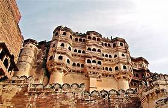
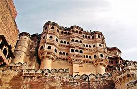

Welcome to the cultural heritage of
RAJASTHAN
The culture of Rajasthan includes many artistic traditions that reflect the ancient Indian way of life. This historical state of India attracts tourists and vacationers with its rich culture, tradition, heritage and monuments. Cultural heritage, vibrant traditions, grand festivals, lip-smacking foods, and glorious history are some of the words synonymous with the land of royalty, Rajasthan. With a culture that dates back to nearly 5000 years. This is a land replete with a flavor and vibrancy unlike any other place in the world. Despite being a desert state for most parts, the vibrant tourism of Rajasthan is as enticing as its cultural and artistic heritage. Therefore, it makes people from all over the world flock to this place.
HISTORICAL SITES


FOOD
Rajasthani cuisine is the traditional cuisine of the Rajasthan state in north-west India. It was influenced by various factors like the warlike lifestyles of its inhabitants, the availability of ingredients in an arid region and by Hindu temple traditions of sampradayas like Pushtimarg and Ramanandi. Food that could last for several days and could be eaten without heating was preferred. Scarcity of water and fresh green vegetables have all had their effect on the cooking. Signature Rajasthani dishes include Dal Baati Churma, Panchratna Dal, Papad ro Saag, Ker Sangri, Gatte ro Saag. It is also known for its snacks like Bikaneri bhujia, Mirchi bada and Kanda kachauri. Other famous dishes include Dal Baati, malaidar special lassi (lassi) and Lashun ki chutney (hot garlic paste), Mawa lassi from Jodhpur, Alwar ka mawa, Malpauas from Pushkar and rasgulla from Bikaner, "paniya"and "gheriya" from Mewar. Originating for the Marwar region of the state is the concept Marwari Bhojnalaya, or vegetarian restaurants, today found in many parts of India, which offer vegetarian food of the Marwari people. The history also has its effect on the diet as the Rajputs preferred majorly a non-vegetarian diet while the Brahmins, Jains, Bishnois and others preferred a vegetarian diet. So, the state has a myriad of both types of delicacies. According to a 2014 survey released by the registrar general of India, Rajasthan has 74.9% vegetarians, which makes it the most vegetarian state in India.
*RAJWADDI CULINARY TRADITION
Rajasthan is known for its Royal Rajwaadi cuisine (also known as Raajsi cuisine) which emanated from the culinary traditions of Royal courts and temples. The Rajwaadi cuisine is characterized by high usage of dry fruits & milk products like Yogurt for preparing rich gravies, ghee & butter for cooking & frying, mawa & chhena for sweets, usage of Kesar, kewda water & rose water, and whole spices for flavoring and aroma. Often Rajwaadi food items are decorated with thin foils of gold & silver and served in golden or silver crockery.

FESTIVALS
Pushkar Camel Fair
The Pushkar Fair, also called the Pushkar Camel Fair or locally as Kartik Mela or Pushkar ka Mela is an annual multi-day livestock fair and cultural fête held in the town of Pushkar near Ajmer city in Ajmer district in (Rajasthan, India). The fair starts with the Hindu calendar month of Kartik and ends on the Kartik Purnima, which typically overlaps with late October and early November in the Gregorian calendar. In 1998, over 1 million visitors came to Pushkar throughout the year. The Pushkar fair alone attracts over 200,000 visitors The Pushkar fair is one of India's largest camel, horse and cattle fairs. Apart from the trading of livestock, it is an important pilgrimage season for Hindus to the Pushkar lake. Pushkar fair has also become a significant tourist attraction for domestic and international travellers, given the cooler season, the abundance of colourful cultural themes. Cultural events and competitions include dances, tug of war between women teams as well as men teams, the "matka phod", "longest moustache" competition, "bridal competition", camel races and others.
Kite Festival
The Makar Sankranti festival, celebrated in various parts of India, including Rajasthan, has its roots in ancient Hindu mythology. It marks the transition of the sun into the zodiac sign of Capricorn, symbolizing the end of winter and the arrival of longer days. This transition is associated with new beginnings, harvest, and the triumph of light over darkness. The festival holds great cultural and religious significance in Rajasthan. It is believed to cleanse the sins of the past and inspire a fresh start. The kites flown during this festival are considered to carry people’s prayers and aspirations to the heavens. The act of kite flying is seen as a means to connect with the divine, seek blessings, and spread happiness and prosperity. the decoration of homes and streets. Colorful rangoli patterns, floral decorations, and vibrant banners adorn the houses and lanes, creating a festive atmosphere. People dress in traditional attire, and the entire state comes alive with a sense of anticipation and excitement. On the day of the festival, people wake up before dawn to take a ritual bath in the holy rivers or lakes. They offer prayers to the sun god and seek blessings for a prosperous year ahead.
Mewar Festival
About Mewar Festival Udaipur Rajasthan At the arrival of the spring season, the city of Udaipur gears up for its annual Mewar festival which is celebrated with a lot of zeal and enthusiasm. Since Udaipur has been the governing city of the Mewar rulers, the festival holds importance among the locals. The city gets decorated at its best and the local shops and markets are seen beautifying their facade with impressive lightings and colours. Women are also decked up in their finest attires flaunting traditional jewellery and mehendi on their palms and feet. As a part of the tradition they all gather to dress up the idols of Lord Shiva and Goddess Parvati. After which a procession takes place in which the women carry idols on their heads and pass through different parts of the city. The procession comes to its final halt near Lake Pichola and the idols are transported into special boats which then get immersed in the middle of the lake. Witnessing these series of traditional rituals is truly a sight to behold. After the completion of these rituals cultural activities begin with full excitement. It is enriching to watch locals perform dance and dramas, along with some fine performances by the singers and musicians. While all the locals and tourists enjoy every bit of the festival for all the three days, the Mewar Festival gets a royal closure by displaying colourful fireworks in the sky. Dates of the festival: Mewar Festival is celebrated for three days in the month of April
Teej Festival
Teej is celebrated on the third day of the waxing moon in the month of Shravan (Hindu calendar), and on the third day of the waning and waxing moons in the Hindu month of Bhadrapad. However, Rajasthan is not the only state Teej is celebrated in, many other states in the north and west India observe this monsoon festival held in August and September. Although, it is fair to say that Teej is celebrated with great zeal and enthusiasm in the desert state of Rajasthan. Ideally, there are three Teej festivals, namely, Haryali (Green) Teej, Kajari/Kajli Teej and Hartalika Teej. According to Hindu mythology, after the self-immolation of Sati, Lord Shiva became grief-stricken and went into a meditative state. It is believed, it took Sati 108 subsequent births to bring Lord Shiva out of his meditative state. Her 108th birth was in the form of Parvati. Thus, married women seek the blessings of Goddess Parvati on Teej Festival for marital bliss. On the occasion of Teej Festival, women observe a fast and pray through the night. In the morning, they bathe and dress in red sarees and fine jewellery to worship Goddess Parvati. The major attractions of Teej Festival are the swings that are fixed to the branches of large trees, on which the women take turns to enjoy swinging. Special songs are sung, and the women decorate their hands with henna. Married daughters are presented with sweets and clothes by their mothers. The girls engaged to be married receive gifts of henna, bangles, clothes, and sweets from the in-laws.
Elephant Fair
The Elephant Festival is a festival celebrated in the city of Jaipur in Rajasthan state in India. The Elephant Festival begins with a procession of bedecked elephants, camels, horses and folk dancers. The owners embellish their elephants with vibrant colours, jhool (saddle cloth) and heavy jewelry. Female elephants wear anklets that tinkle as they walk. People perched on top of elephants sprinkle gulaal (coloured powder). The most beautifully decorated elephant is awarded as the winner. Elephant polo, elephant racing, and a game of tug-of-war between elephants and 19 people are the featured events of the festival. The elephants are also outfitted with ear danglers and brocade scarves to embellish their ears and necks. The Mahouts, who are known as the caretakers of the elephants, decorate the foreheads of the animals with head-plates as well as garnish their tusks with gold, silver bracelets and rings. Other events that take place during the festival include a polo match and a tug of war contest, where the strongest elephant is chosen to compete against a group of ten people. Although the festival is primarily based on elephants, other animals such as camels and horses also participate.
ARTS AND HANDICRAFTS
Blue poetry
Blue pottery is a widely popular traditional craft from Jaipur, Rajasthan. Although, the art originally has a Turko-Persian background. The name ‘Blue Pottery’ comes from a vibrant cobalt blue dye colour that artists use for making articles. It is specifically a blue and white form of pottery, which is Euroasian in type. The size and shape of art take influences from Chinese pottery. While carving the port for this craft, there is no usage of no clay. Craftsmen use quartz stone powder, powdered glass, gum borax and Multani mitti (Fuller’s Earth) and water to make a dough for the port article. These pottery items are normally embellished with animals, birds and flower motifs. Handicrafts that are commonly made with pottery include a flower vase, ashtray, small bowls and ports.
Ivory jewellery
Ivory is a hard cream shade material that comes from an elephant trunk. It continues to compare with other expensive stuff like pearl or sliver. Jaipur, Rajasthan is like a hub for Ivory. The ivory bangles are a piece of traditional jewellery, with Rajasthani women wearing them on every important occasion. Many admire ivory for both practical and artistic reasons ss it is stronger than a block of wood and reliable. It does not break or crack with easy use. Over the years, ivory has come a long way. Earlier, when metal was not around, men made weapons using ivory material. Most noteworthy, ivory has become more expensive, with people considering it as a luxurious traditional item.
Puppet
A puppet is familiar in India as a kathputli. The name links back with two Rajasthani language words, Kath meaning wood and Putli, which means no life. Kathputli means a puppet, which is completely made with wood. An artist uses cotton and colourful clothes to make them look stunning. Puppet or kathputli has roots from Nagaur, Rajasthan and surrounding areas. The capital of India, New Delhi also has an area by the name of ‘Kathputli Colony’ in Shadipur Depot. This is where all the puppet workers, musicians, and dancers live. According to many historians, this art is a thousand years old. The tradition of Kathputli began with ancient folk tales about rich kings and kingdoms.
Stone carving
Existing in India since the 7th century BC, stone carving art is a very rich traditional craft. The skills usually are passed down from father to son. The classical cultural stonework is like an extension of architecture. Rajasthan is naturally wealthy in marbles, granites, slates, quartzite, and other rocks. Thus it has become a centre for stone carvers. In addition, the great quality of marbles and sandstones extracted from various mining and had given fame to sculptors. Mines in Makrana, Rajasthan are famous for its marbles. Marbles of Makrana quarries were used in making of the Taj Mahal, which is one of the wonders of the world.

 
